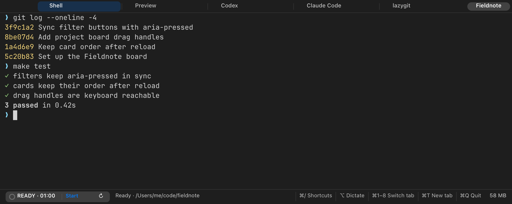
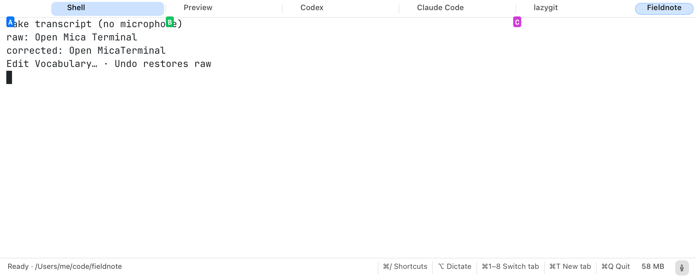
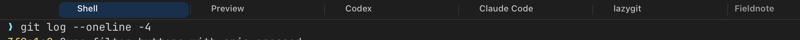
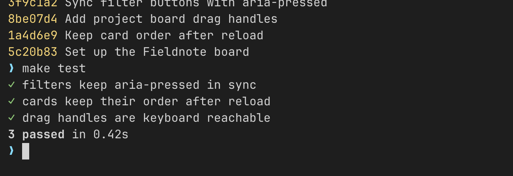
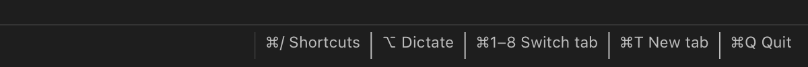
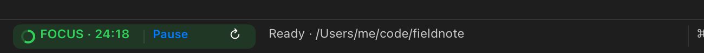
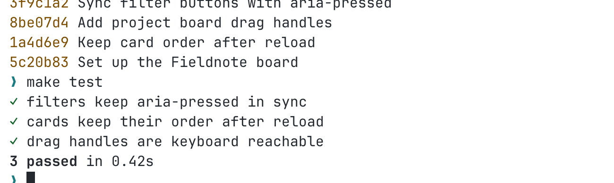

Three tools in one light Mac app.
Mica is a terminal, on-device voice typing and a focus timer built into one native app that idles around 55–60 MB. Every project gets its own window, and coding agents run right inside it.
Version 0.1.0 alpha · Apple silicon, macOS 14 or later · Free and open source · Install notes


This is the real Mica view, rendered from a sample project. Switch themes any time with ⌥⌘L.
It weighs less than the tools it replaces.
Most people run a terminal, a voice-typing app and a timer separately, and the voice app is often a web browser in disguise. Mica builds all three into one native process, with no web view.
iTerm2 plus Wispr Flow is about 770 MB before you add a timer. Measured idle with one window each, on the same Mac. Voice typing adds a helper of about 35 MB only while you speak, then it exits, and Mica shows its own memory live in the status bar. Very large windows cost more in every app, and project windows share one process; the measurements page has the method and the cases where Mica does not win.
Download, drag, open.
Open Mica.dmg, drag Mica to Applications and launch it. It is signed with a Developer ID and notarized by Apple, so it opens like any other Mac app. Prefer to build it yourself? Three commands do it. You need the Xcode command line tools. The terminal parsing library ships in the repository and is linked into the app, so the finished bundle runs on its own. The first build also fetches the speech package over the network.
One window for each project.
Name a project, give it folders and startup tabs, and open it again from a launcher on your Desktop. The Dock icon shows the mark of the project in front. The status bar shows the git branch, and a worktree tab gives each agent its own checkout.

Agents are ordinary programs.
Run Codex, Claude Code or anything else in a normal zsh tab. Mica reads the visible screen for signs of work or a question, shows it on the tab, and notifies you when a program asks for attention, so you can look away until it does. Your own zsh configuration keeps working.

Speak, then read it back.
Hold left ⌥, say what you want to run, and release. Your words appear in the prompt for you to edit before you press Return. Recognition runs on your Mac with NVIDIA’s Parakeet model. Mica fetches the 630 MB model in the background on first launch, and the recognizer only occupies memory while you are speaking.

A focus timer that follows you.
One timer is shared by every Mica window on your Mac, with a notification when a focus or break period ends. It lives in the status bar, so it never covers your output.

Still your terminal.
Search what scrolled by with ⌘F, open links and web addresses with ⌘-click, drag tabs to reorder them, and paste images for agents that read them. When a program on a remote machine asks to set your clipboard, Mica asks you first.
